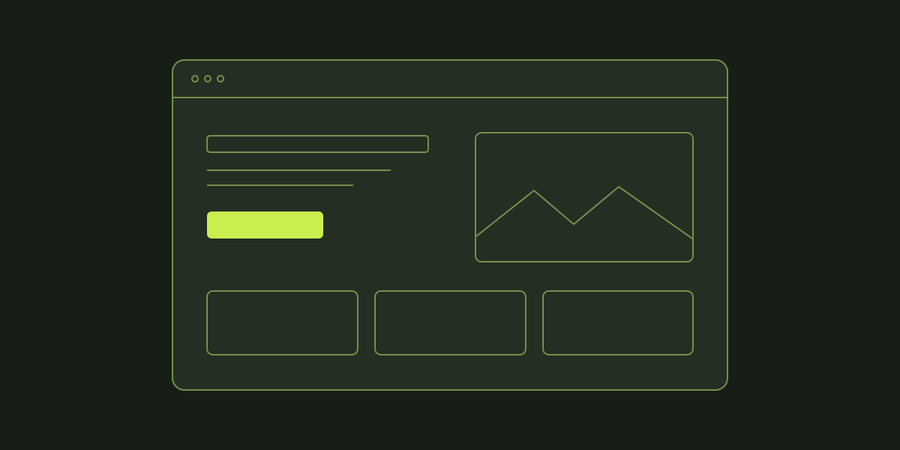
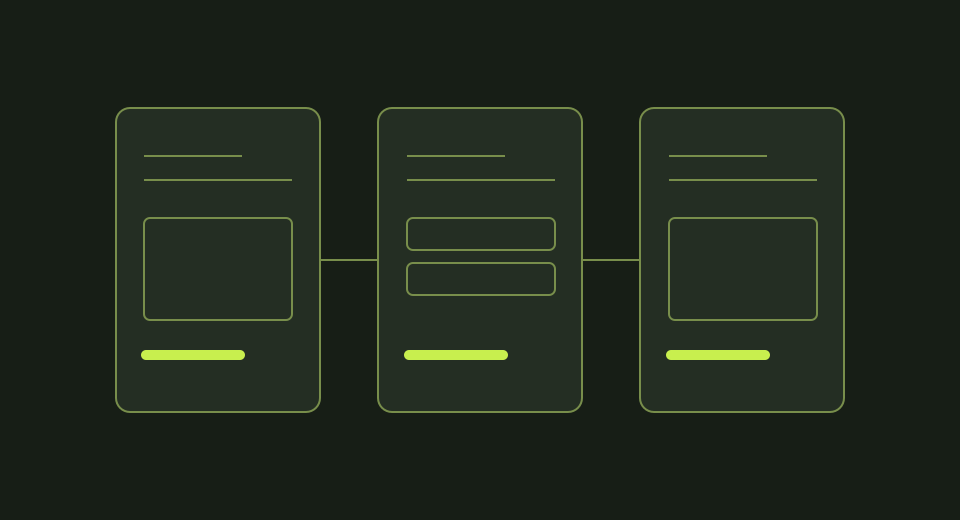

Experian Product
Design Strategy
Leading UX design for the launch of Experian’s Insurance Marketplace.
- Role
- UX design lead
- Team
- Design, content, and research
- Scope
- Marketplace launch

The challenge
Shopping for insurance asks people to make sense of unfamiliar information before they can confidently take the next step. Our goal was to make that experience easier to navigate and give the business a clear way to evaluate it.
How we approached it
We used research and analytics to identify where people struggled and set design priorities. I led design direction with designers, content specialists, and researchers, aligned priorities with cross-functional partners, and presented the strategy to executives.

What shipped
The Insurance Marketplace launched as part of Experian’s expansion into new categories.